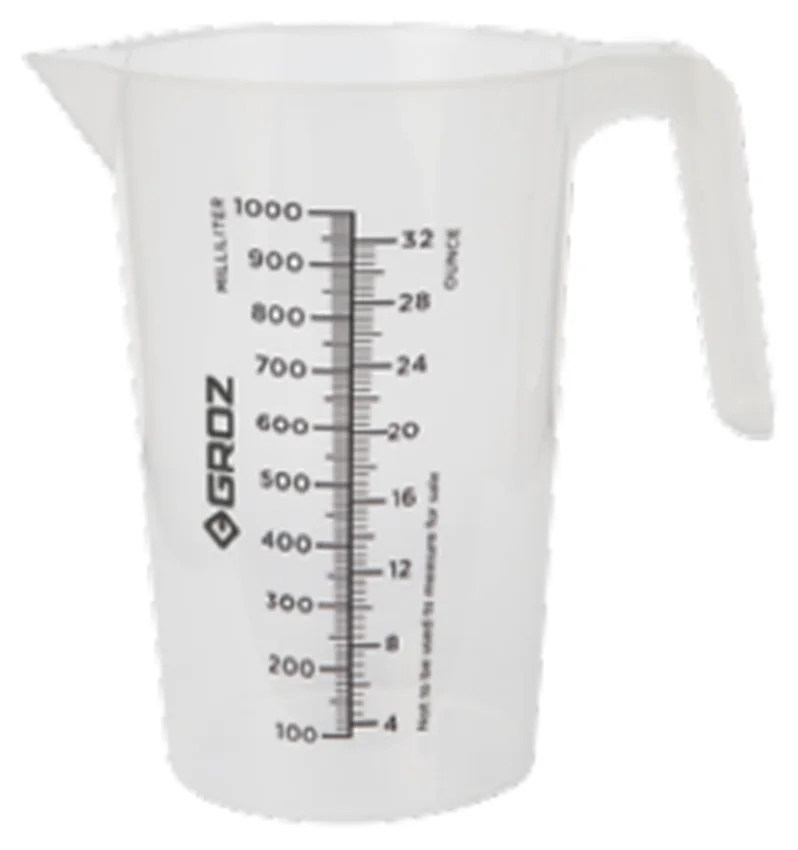

GROZ · Oiling Equipment
Measuring Jugs
CAT NR JUG/250G · ORD NR 41944
| CAT NR (catalogue number) | JUG/250G |
|---|---|
| ORD NR (order number) | 41944 |
| Box quantity | 10 |
| Capacity (ml) | 250 |
| Capacity (oz.) | 8 |
| Table section | NON-STACKABLE |
Ask for a quote The catalogue PDF, page 183
“Ask for a quote” opens this product in the catalogue: add it to your quote and send it. Buyers from Africa, the Gulf and worldwide are welcome; prices in USD, EUR or INR.
From the GROZ Fluid Handling CC-07 catalogue. Not yet verified: these details were read from the printed catalogue automatically; check the catalogue page before ordering.